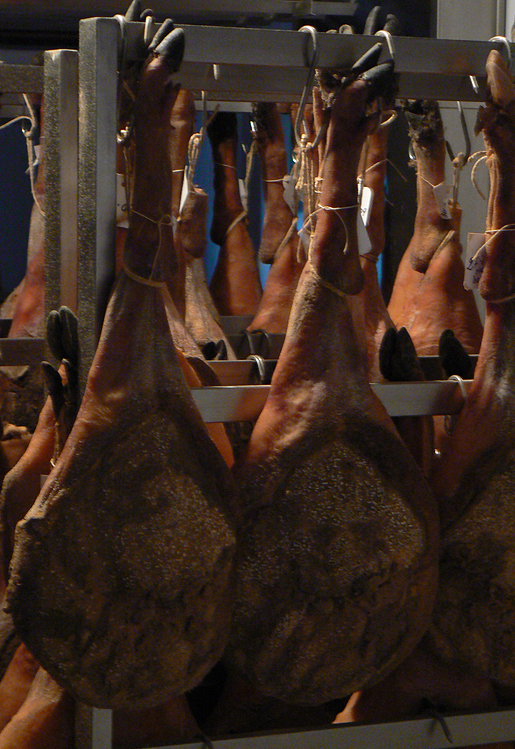
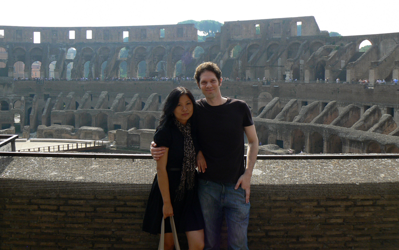
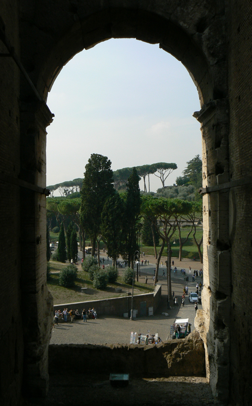
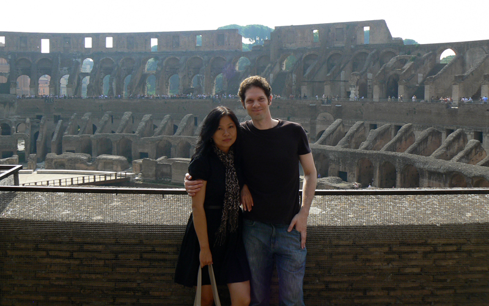
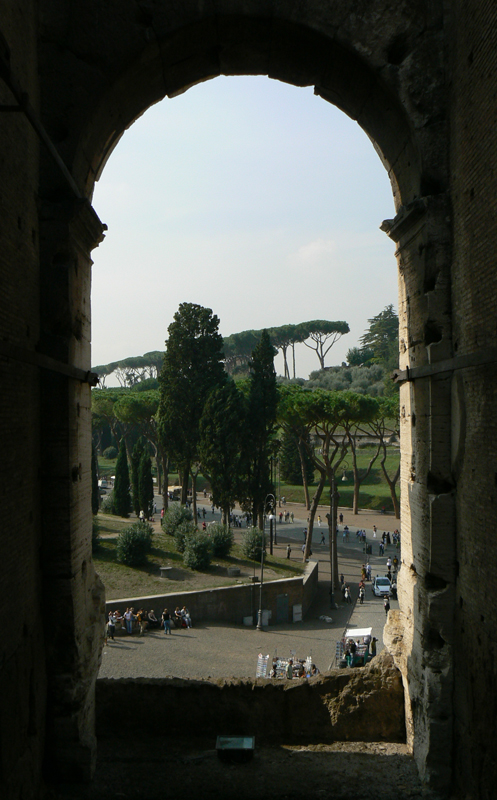

Our Travels
Bella Italia! 2007
Useful links
Useful links
Our first stop was Venice. We landed at a small airport outside the city, from where we hopped on a water taxi which took us to the city center. It was an amazing experience. A bit pricey, but truely worth it. Here are some of my favorite places and things to do in Venice.


Check the following youtube video to see the top ten things to do in Venice.
After spending a few days to explore Venice, we took a train to Siena in Tascany. A truely beautiful city!


Check the following youtube video to see the top ten things to do in Siena.
From Siena, we traveled south to Sorrento, a gorgeous city on the Amalfi coast.



Check this Rick Steve's YouTube video to learn more about Sorrento.
We wrapped our two week trip visiting Rome. A bit exhausted by the end of the trip. Frankly speaking, I liked Rome the least, perhaps because I felt exhausted. Having said that, I would love to visit Rome again and spend more time there as there is so much to see!

 



Check this Rome walking tour video to get some ideas for your next step in Rome.